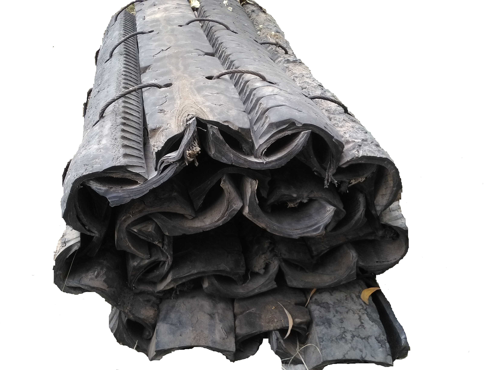

A blasting mat is a mat usually made of used sliced-up rubber tires bound together with ropes, cables or chains. They are used during rock blasting to contain the blast, prevent flying rocks and suppress dust.
(1) Quarter Tire Blasting mats

-> Traditional (woven) reversible time proven, very flexible and economical.
-> Constructed of whole used passenger (PLT) tire segments.
-> Tightly woven together under compression using ¾” quality heavy duty steel wire rope fastened together with heavy duty ¾” forged clamps and 3/8” flat bar end plates.
-> Standard size of the Quarter tire is (5 Feet x 12 Feet).
(2) Thread Mats Blasting Mats
-> Constructed of fresh, used light truck tire treads.
-> Tightly secured together under compression using new 3/4” heavy duty steel wire rope fastened together with heavy duty.
-> Mats are 8 inches thick and available in numerous widths and lengths.
-> Excellent blast cover over uneven ground, large construction projects – highway, pipelines, quarries, open pit mining
-> Can also used for temporary road mats in rugged terrain, unstable ground and sensitive environment landscapes.
(3) Side Wall Blasting Mats
-> This is High performance Blasting mat.
-> here each and every tire are tightly secured with each other.
-> This Mat can also used for temporary road mats for large mobile forestry, oil or mining equipment operating in rugged terrain, unstable ground and sensitive environment landscapes.
-> Constructed of fresh, used semi-truck (MT) tire treads.